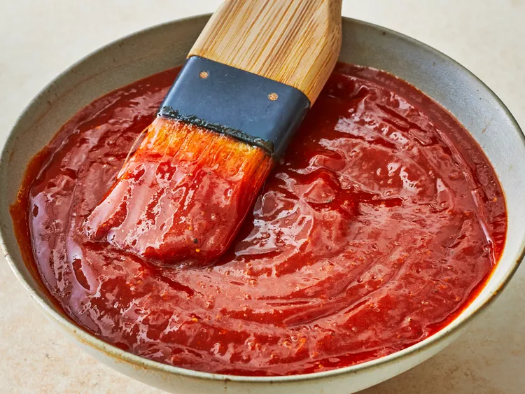

Vinegary BBQ Sauce

Description
This recipe uses a lot of apple cider vinegar, so isn't as sweet as your regular
store-bought BBQ sauce. The ingredients listed are the baseline, however you're free
to add extras of anything listed to enhance certain flavors. I tend to do it every time
because the sauce never comes out the same way twice for me.
Ingredients
- 1 28 oz can (3.5 cups) tomato puree (or tomato sauce)
- 2 1/2 tbsp garlic powder
- 1 tbsp onion powder
- 1 cup brown sugar
- 1 cup apple cider vinegar
- 1/2 cup tomato paste
- 1/2 cup Worcestershire sauce
- 2 1/2 tsp salt
- 1 tsp ground black pepper
- 1/2 tsp hot sauce, or to taste
Steps
- Combine tomato puree, apple cider vinegar, and Worcestershire sauce in a pot over
medium heat.
- Stir in remaining ingredients.
- Bring to a boil, then lower heat and let simmer for 20 minutes.
- Taste, and add incredients if necessary; brown sugar for more sweet, vinegar for
more tang, hot sauce for more spice. Try to refrain from adding any more tomato paste
or Worcestershire sauce. With these two ingredients, a little goes a long way and can
change the sauce more than is intended.